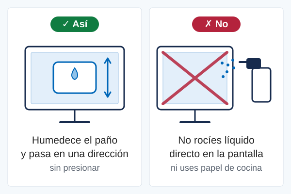
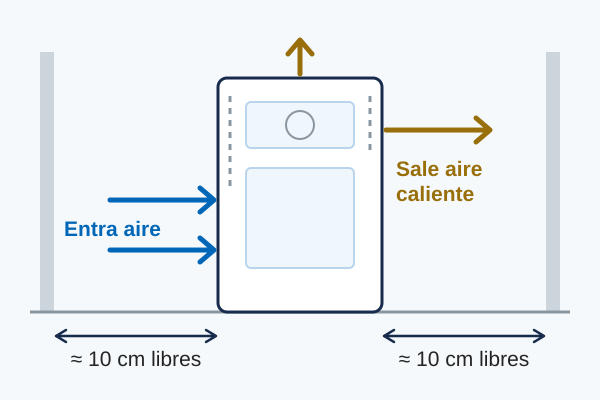

Prepara el área de trabajo
Usa una mesa firme, limpia, seca y bien iluminada. Mantén lejos las bebidas y la comida, y ordena los cables para no tropezar con ellos ni jalarlos.
Aprende a cuidar tu laptop o tu PC de escritorio, a reconocer los problemas más comunes y a saber cuándo conviene llevarla a un técnico.
Antes de limpiar o revisar cualquier equipo, prepara el lugar y evita lo que pueda causar un daño eléctrico o físico.
Usa una mesa firme, limpia, seca y bien iluminada. Mantén lejos las bebidas y la comida, y ordena los cables para no tropezar con ellos ni jalarlos.
Guarda los documentos que tengas abiertos y haz una copia de seguridad de los archivos importantes antes de cualquier reparación o cambio de configuración.
Humo, chispas, olor a quemado, líquido dentro del equipo, batería hinchada o un calentamiento fuera de lo normal: deja de usarlo y llévalo a un técnico. No abras la fuente de alimentación ni toques una batería dañada.
Para el mantenimiento externo basta con muy poco. La tabla separa lo que puede usar cualquier persona de lo que solo debe usar un técnico.
| Material | Para qué sirve | Cómo usarlo | Quién |
|---|---|---|---|
| Paño de microfibra limpio y seco | Pantalla, carcasa y teclado. | Pásalo con movimientos suaves y sin presionar. Lávalo cuando acumule grasa. | Usuario |
| Agua o el limpiador que indique el fabricante | Quitar manchas que el paño seco no saca. | Humedece apenas el paño. Nunca apliques el líquido directo sobre el equipo. | Usuario |
| Alcohol isopropílico al 70 % | Carcasa, teclas y ratón. | Solo si el fabricante lo permite, y aplicado al paño. En pantallas, mejor evitarlo. | Usuario |
| Aire comprimido en lata | Polvo del teclado y de las rejillas por fuera. | Con el equipo apagado, lata en vertical, ráfagas cortas desde unos 10 a 15 cm. | Usuario |
| Brocha o cepillo suave | Polvo entre las teclas y en las rejillas. | Barre sin presionar y en una sola dirección. | Usuario |
| Hisopos de algodón | Bordes y huecos entre teclas. | Apenas humedecidos; que no goteen. | Usuario |
| Linterna | Ver el polvo en rejillas y puertos. | Alumbra de lado para que se note la suciedad. | Usuario |
| Cintas de velcro o amarres | Ordenar los cables. | Sin apretar ni doblarlos en ángulo cerrado. | Usuario |
| Destornilladores de precisión, pulsera antiestática, pasta térmica | Abrir el equipo y limpiar o cambiar piezas internas. | No hacen falta para este manual. Abrir el equipo puede afectar la garantía. | Técnico |
Papel de cocina o servilletas (rayan), limpiavidrios con amoníaco, solventes como la acetona, aerosoles aplicados directo, agua en exceso y aspiradoras comunes dentro del equipo (pueden generar electricidad estática).
Son los cuidados que se hacen antes de que aparezca una falla. Qué tan seguido hacerlos depende de cuánto uses el equipo y del lugar donde esté; en la sección Rutina hay una tabla con frecuencias.

Mira los cinco puntos del esquema. Una linterna ayuda a ver el polvo en las rejillas y los puertos.

Humedece el paño de microfibra, no la pantalla, y pásalo en una sola dirección.

El aire necesita entrar y salir. Deja unos 10 cm libres alrededor de las rejillas.
Esquemas hechos para este manual. Las fotografías de los equipos completos son de Unsplash.
Elige tu equipo para ver los cuidados que le corresponden.

Hazlo con el equipo apagado, frío y desconectado. No hace falta abrir la carcasa.
La superficie queda limpia y seca, las rejillas despejadas y el cargador sin daños visibles. Conéctala y verifica que funcione como siempre.

Una PC de escritorio son varios dispositivos juntos. Revisa el gabinete, el monitor y los periféricos por separado.
El gabinete y los periféricos están limpios, las rejillas despejadas y los cables sin daños visibles. Reconecta todo y prueba el monitor, el teclado y el ratón.
Abre la configuración del sistema operativo y entra en la sección de actualizaciones. Lee lo que va a instalar, conecta el equipo a la corriente si hace falta y no interrumpas una actualización en curso.
Mira cuánto espacio queda desde la configuración de almacenamiento y trata de dejar libre al menos el 15 % de la unidad. Elimina solo archivos personales que reconozcas y no toques las carpetas del sistema.
Guarda los archivos importantes en otro lugar, como una unidad externa o un servicio de almacenamiento en la nube. Abre alguno de vez en cuando para confirmar que la copia sirve.
Descarga programas solo de sitios oficiales o de tiendas confiables. Deja activa la protección del sistema y no hagas caso a ventanas que prometen “acelerar” o “reparar” todo con un clic.
El equipo está limpio por fuera, las rejillas libres, las actualizaciones revisadas, tus archivos importantes tienen copia y los periféricos funcionan.
Se hace cuando el equipo ya falló. Lo primero no es abrirlo, sino anotar qué pasa y revisar las causas externas más simples: cables, corriente y ajustes.
Describe qué ocurre y desde cuándo.
Revisa corriente, conexiones y ajustes.
Mira si la comprobación resolvió la falla.
Si hay que abrir el equipo, que lo haga un técnico.
Detente: si hay humo, chispas, olor a quemado o un cable deteriorado.
Evita: borrar carpetas del sistema o instalar “optimizadores” desconocidos. Más abajo hay pasos concretos para Windows.
Si persiste, que un técnico la diagnostique.
No cambies ajustes avanzados si no sabes cómo devolverlos a su estado original.
No metas objetos por las rejillas.
Si falla el teclado integrado de una laptop, hay que revisarlo en un taller.
Los pasos sirven para Windows 10 y 11; los nombres de los menús pueden variar un poco según la versión. Windows 10 terminó su soporte general el 14 de octubre de 2025, así que, si tu equipo lo permite, conviene pasar a Windows 11. En Mac, consulta el soporte de Apple (enlaces en Fuentes).
Lo que no habías guardado se pierde al finalizar la tarea.
Deshabilitar no desinstala: puedes volver a activarlo cuando quieras.
No marques “Descargas” sin antes revisar esa carpeta.
Sospéchalo si aparecen ventanas emergentes, programas que no instalaste o lentitud repentina. Microsoft no llama para avisar de fallas en tu equipo: si te llaman, cuelga.
En Windows 10 está en Actualización y seguridad > Windows Update > Ver historial.
sfc /scannow y pulsa Enter.Si dice que no pudo reparar algunos archivos, anota el mensaje y consúltalo con un técnico.
La pantalla se verá con poca resolución; es normal. Si el equipo ni siquiera llega a ese menú, no insistas y llévalo a un técnico.
No toca tus documentos, pero quita los programas instalados después de ese punto. Solo sirve si la protección del sistema estaba activada.
Antes de saltar a lo más drástico, recorre esta escalera en orden.
| Tipo de falla | Ejemplos | Comprobación inicial |
|---|---|---|
| Software | Programa bloqueado, lentitud o errores tras una actualización. | Cerrar la aplicación si responde, reiniciar y revisar actualizaciones y espacio disponible. |
| Conectividad | Wi-Fi desconectado o periférico que no se reconoce. | Revisar los ajustes y el cableado, y probar otro puerto compatible. |
| Alimentación | El equipo no enciende o la laptop no carga. | Revisar el tomacorriente, el cargador y las conexiones externas sin tocar piezas dañadas. |
| Hardware | Pantalla dañada, ruido inusual o teclado que no responde. | No desmontar el equipo; llevarlo a un técnico. |
Haz una copia de seguridad y confirma que de verdad hace falta. Formatear no resuelve todo y puede borrar información que ya no se recupera.
Elige el síntoma que presenta tu equipo y verás comprobaciones externas y seguras para empezar a revisar.
Estas frecuencias son una referencia para un uso diario normal. Si el fabricante de tu equipo indica otra cosa, haz caso al fabricante.
| Actividad | Qué debes revisar | Frecuencia orientativa | Quién |
|---|---|---|---|
| Pantalla y teclado | Polvo, huellas y migas. | Cada semana. | Usuario |
| Limpieza externa completa | Carcasa, teclas, ratón y periféricos. | Cada 3 meses, o antes si se ensucia. | Usuario |
| Ventilación | Rejillas libres y superficie de apoyo despejada. | Cada mes. Cada 2 semanas si hay mucho polvo o mascotas. | Usuario |
| Cables y cargador | Cortes, deformaciones y conectores flojos. | Cada mes. | Usuario |
| Actualizaciones | Windows Update y la protección antivirus. | Cada semana. | Usuario |
| Espacio y programas de inicio | Al menos el 15 % de la unidad libre; aplicaciones que arrancan solas. | Cada mes. | Usuario |
| Examen antivirus completo | Amenazas que la protección en tiempo real no detectó. | Cada mes. | Usuario |
| Copia de seguridad | Que los archivos importantes estén respaldados y se puedan abrir. | Cada semana (a diario si tienes trabajos en curso). Comprobar la copia cada 3 meses. | Usuario |
| Limpieza interna y ventiladores | Polvo acumulado y estado de la pasta térmica. | Cada 6 a 12 meses (cada 6 en ambientes con polvo). | Técnico |
No hay una frecuencia que sirva para todos los equipos. Con polvo, humedad o uso intensivo conviene revisar más seguido. Las tareas internas son siempre para un técnico.
Las dudas que más se repiten al cuidar una laptop o una PC.
Como referencia: la pantalla y el teclado cada semana, las rejillas y los cables cada mes, y la limpieza externa completa cada tres meses. La limpieza interna, cada 6 a 12 meses y por un técnico. Si hay mucho polvo o usas el equipo todo el día, hazlo con más frecuencia. En la sección Rutina está la tabla completa.
No. Usa un paño de microfibra y sigue las indicaciones del fabricante. Evita productos abrasivos, el papel de cocina, aplicar líquidos directo y presionar el panel.
Mejor no. Algunos fabricantes permiten alcohol isopropílico al 70 % en la carcasa y en las teclas, pero muchas pantallas tienen recubrimientos que se dañan. Revisa el manual de tu modelo y, si no estás seguro, usa solo el paño de microfibra apenas húmedo.
Sí. Apágalo por completo y desconecta el cargador o el cable de alimentación y los periféricos antes de la limpieza externa.
El preventivo son los cuidados periódicos que reducen la posibilidad de fallas. El correctivo se hace cuando el problema ya apareció y hay que identificarlo y resolverlo.
Cierra los programas que no usas, revisa el espacio disponible, reduce los programas de inicio y mira si hay actualizaciones pendientes. Los pasos están en la sección Mantenimiento correctivo. Si sigue lenta, anota cuándo ocurre y pide que la revisen.
Una referencia práctica es dejar libre al menos el 15 % de la unidad donde está instalado Windows. Con muy poco espacio, el sistema trabaja más lento y las actualizaciones pueden fallar.
Pulsa Windows + R, escribe winver y pulsa Enter. Se abre una ventana con la versión y la compilación.
Si no tienes preparación técnica, no. Una intervención mal hecha puede dañar componentes y afectar la garantía. Es mejor que lo haga personal capacitado.
Deja de usarlo. Desconéctalo solo si puedes hacerlo sin riesgo. No lo enciendas para comprobar si funciona y llévalo cuanto antes a un técnico.
Porque permiten recuperar tus documentos si el equipo falla, se pierde el acceso a él o hay que repararlo o reinstalar el sistema.
Cuando la falla sigue después de las comprobaciones básicas, cuando hay que abrir el equipo o cuando aparecen humo, chispas, olor a quemado, batería hinchada o un calentamiento anormal.
Palabras técnicas que aparecen en el manual, explicadas de forma sencilla.
Los procedimientos cambian según la marca y el modelo. Para instrucciones exactas, consulta siempre la documentación oficial del fabricante.
Si para arreglarlo hay que abrir el equipo, que lo haga un técnico. Todo lo demás que explica este manual puedes hacerlo tú.